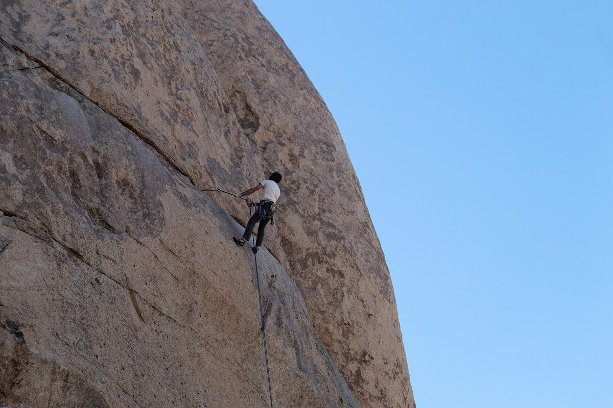
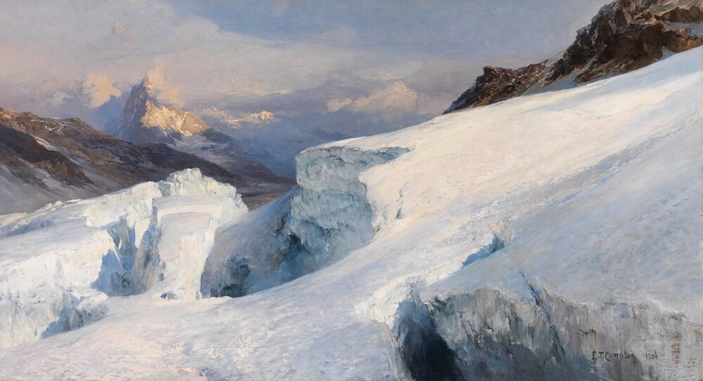
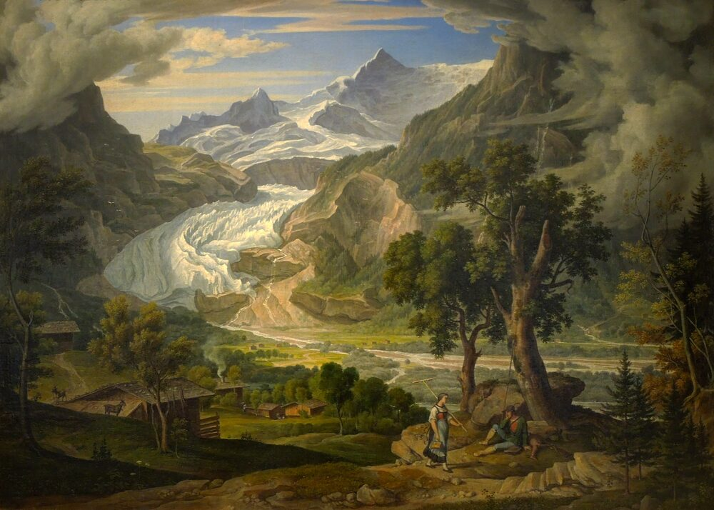

B1 · Sports
Learning to Climb
What rock climbing actually involves — the styles, the technique, and what goes in the pack.
Play the audio and follow along, then read it again on your own. Tap or hover over a highlighted word to see what it means.
Rock climbing is a sport in which you go up, across, or back down a rock face — either a real one outdoors or an artificial wall at a gym. People sometimes assume it is all upper-body strength, but that is only one part of it. Climbing asks for technique and for a certain kind of concentration as well, and the climbers who last are usually the ones who worked on all three.
There are several ways to climb, and they suit different people. Bouldering is done on short, low routes without a rope, either on real boulders or indoors, and it is really a puzzle: a few hard moves that you try again and again until the sequence works. Top-rope climbing has the rope anchored above you before you start, so a slip leaves you hanging rather than falling, which makes it the usual place to begin. In lead climbing, the climber clips the rope into protection points while going up, which gives more freedom and demands more skill. Sport climbing uses routes with bolts already fixed in the rock, while traditional climbing — trad, as climbers call it — means placing your own gear in cracks as you go and taking it out afterward.

Whatever the style, the basics of technique are the same. Beginners tend to haul themselves up with their arms and are exhausted within minutes. Good climbers stand on their feet instead, pointing their toes and using the edges of their shoes, and they keep their center of gravity over those feet rather than hanging off the wall. Hands matter too, and the different grips have names — crimps, slopers, jugs and pinches — which you learn to recognize by feel as much as by sight. On a longer route, the skill that separates people is knowing how to rest: finding a position where you can shake out an arm and get your breathing back before the next hard section.

Climbing outdoors usually means walking in first, and the hike deserves as much planning as the climb. Boots with real ankle support are worth the money, and they need to be broken in before the day itself, not on it. Clothing should be in layers that move sweat away from the skin, because you will be warm on the walk and cold standing at the base. A waterproof jacket is not optional in the mountains, where the weather can turn in an hour, and a hat and sunglasses matter more at altitude than most people expect.
In the pack go water — two liters at a minimum, more in summer — and food that is worth its weight, so nuts, dried fruit, or energy bars rather than anything that needs cooking. A small first-aid kit covers the cuts and blisters that actually happen. A map and compass, or a GPS, are worth carrying even on a route you think you know, and a headlamp is what turns a slow descent in the dark from an emergency into an inconvenience. Most climbers also carry a multi-tool and a whistle, which weigh almost nothing and occasionally matter a great deal.
Then there is the climbing gear itself. Climbing shoes fit tightly, for control, but a shoe that actually hurts will end your day early. A harness and a helmet are not negotiable on roped climbs — the helmet is as much for rock falling from above as for a fall of your own. A chalk bag keeps your hands dry, and a belay device with a few carabiners is needed for anything beyond bouldering.

The advice given to nearly every beginner is the same three things. Find a partner, because climbing alone is a bad idea and a worse habit. Take an introductory class, since the safety systems are simple but unforgiving of guesswork. And build up on easy routes, where there is time to think about footwork, instead of jumping onto something hard and learning nothing but fear.
Climbers talk a lot about the summit, but most of them will admit the top is not really the point. The sport is the movement, the place, and the people you go with. It also comes with an expectation: you leave the crag as you found it, take your trash home, and pass on the etiquette to whoever comes next.
Key Vocabulary
- a rock face the steep, exposed side of a rock or cliff
- bouldering climbing short, low routes without a rope
- center of gravity the point where a body's weight is balanced
- to shake out to let an arm hang and relax so blood returns to it
- to support to back, to take the side of — careful: not to put up with or endure
- to break in to wear new boots until they fit comfortably
- a layer one of several pieces of clothing worn on top of each other
- actually in fact, really — careful: not 'at the moment'
- a harness the belt and straps that attach a climber to the rope
- to belay to control the rope to protect a climbing partner
- a crag a small cliff used for climbing
- unforgiving leaving no room for mistakes
- etiquette the unwritten rules about how to behave in a group
Learning to Climb — B1 · Sports · Renan the Teacher, English Language Academy · https://renangrossi.github.io/englishclasses/reading/b1/climbing.html
Interactive Exercises
Practice
Complete each exercise, then click Submit to see your score and an explanation for every answer.
Speaking & Writing
Discussion
There are no right answers here — use these to practice speaking, or write a short answer to each.
- Would you rather try bouldering indoors or a roped climb outdoors? Explain your choice.
- The text says the summit is 'not really the point'. Is that true of other sports you know?
- Think of an activity you do. Which three items would you tell a beginner they must not leave at home?
- Climbers are expected to leave no trace. Should the same rule apply to tourists in general? Write about 100 words.